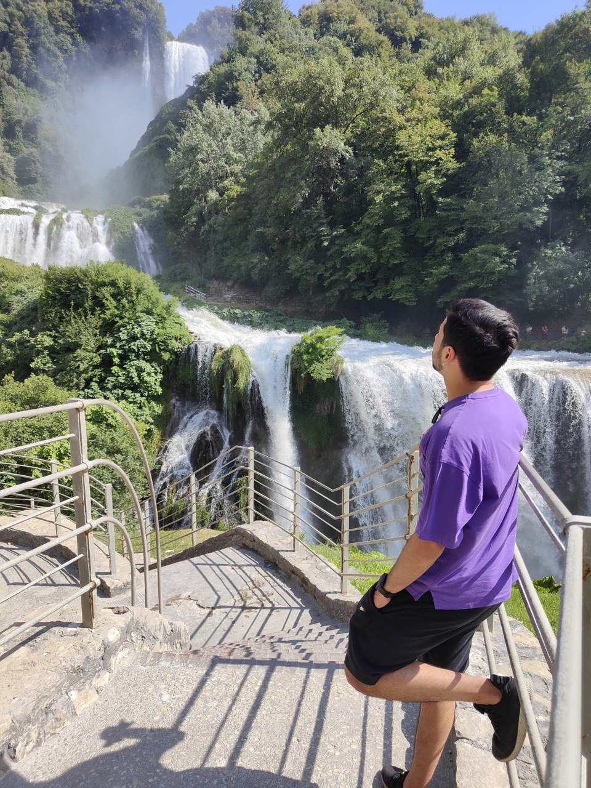

Ciao, sono Alessandro 24 anni e vivo a Roma. Sono un ragazzo educato, laborioso, paziente, curioso e socievole.
Non ho mai scritto codice ma già so che questa sarà una delle esperienze migliori di sempre!
Nel tempo libero mi piace molto rilassarmi guardando serie TV, anime e films.
Amo viaggiare, conoscere persone e posti nuovi, praticare sport e svagarmi giocando al PC!
Link Utili
 GitHUb
GitHUb
Alessandro per gli amici dascio, serie TV preferita, a mio modesto parere la migliore, Breaking Bad mentre per il
mondo
anime spero di riuscire a vedere la fine di One Piece prima di morire. Come detto sopra mi piace
molto viaggiare
preferisco leggermente di piu gli ambienti di montagna rispetto a quelli di mare prevalentemente perche più
rilassanti. Mi piacerebbe visitare in un prossimo futuro il Giappone e la Norvegia, sia per cultura sia per i
paesaggi
fantastici. Ho sempre praticato sport sin da piccolo, ho cominciato a lanciare il mio primo pallone da basket a 7
anni.
Attualmente per motivi di lavoro e tempo ho ripiegato sulla palestra, anche se molto più noiosa ti restituisce
flessibilità
con gli orari. Ah ho anche una grande passione per l'informatica più precisamente PC e smartphone.